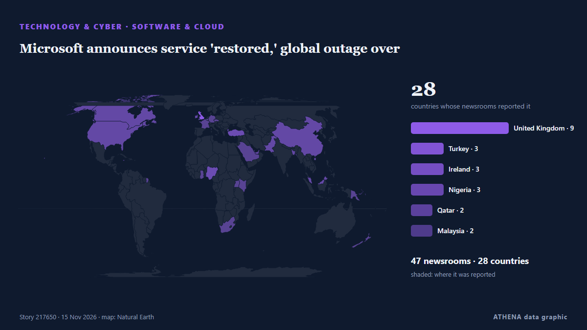

Technology, AI & Cybersecurity
SponsoredPresented by  Cybernetics and Artificial Intelligence Lab Welcome to the Cybernetics and Artificial Intelligence Laboratory, established at the Department of Business Administration of the National and Kapodistrian University of Athens. The lab is headed by Professor Dimitrios Thomakos. The lab aims to do research that can be published in top venues. Our research uses tools and methods of Artificial Intelligence, and lies in the following areas: - Forecasting - Decision making - Cyber security - Finance We are always looking forward to collaborating with exceptional students!
Cybernetics and Artificial Intelligence Lab Welcome to the Cybernetics and Artificial Intelligence Laboratory, established at the Department of Business Administration of the National and Kapodistrian University of Athens. The lab is headed by Professor Dimitrios Thomakos. The lab aims to do research that can be published in top venues. Our research uses tools and methods of Artificial Intelligence, and lies in the following areas: - Forecasting - Decision making - Cyber security - Finance We are always looking forward to collaborating with exceptional students!

Software & cloudMicrosoft announces service 'restored,' global outage over
Tech giant Microsoft said Saturday it has "restored service" to customers, effectively drawing a close to a massive outage that caused chaos and disrupted public services and business around the… from Vanguard
| 2 Nov | 111 |
|---|---|
| 3 Nov | 102 |
| 4 Nov | 99 |
| 5 Nov | 112 |
| 6 Nov | 54 |
| 7 Nov | 37 |
| 8 Nov | 42 |
| 9 Nov | 103 |
| 10 Nov | 114 |
| 11 Nov | 83 |
| 12 Nov | 74 |
| 13 Nov | 79 |
| 14 Nov | 26 |
| 15 Nov | 5 |
SpaceX's Starship nears end of 15th test flight and return-landing attempt
STARBASE, Texas, Nov 14 - SpaceX's next-generation Starship spacecraft cruised around the globe on Saturday nearing the end of its 15th test flight and what the company hoped would be an… from The Straits Times
Nvidia 'spy' scandal: Megaspeed Malaysian arm Speedmatrix under scanner
Investment, trade and industry minister Johari Ghani says there is no evidence yet that Speedmatrix Sdn Bhd contravened Malaysian law. from Free Malaysia Today
‘A moral red line’? World on cusp of autonomous weapons revolution
Lethal autonomous weapons powered by artificial intelligence are set to revolutionise warfare but there is no proper regulatory or legal framework governing the new technology. from Al-Monitor
NASA's Voyager 1 closes in on a light-day in interstellar space for a new distance record
CAPE CANAVERAL, Fla. (AP) — NASA’s Voyager 1 is about to become humanity’s first object to reach one light-day from Earth as it pushes ever deeper into interstellar space. from The Canadian Press (via CityNews)
Microsoft restores service to Outlook and Teams after global outage
Downdetector logs over 7.4m reports worldwide, highlighting global dependence on Microsoft's workplace tools. from Express Tribune
Tesla opens Cybercab pre-orders ‘for personal use,’ with geo restrictions and a $299 monthly fee
Even Elon Musk said the monthly fee is "too high." from TechCrunch
Who Could Replace Jensen Huang at Nvidia? Seven Potential Successors
Nvidia chief Jensen Huang sits at the center of the artificial intelligence boom, and the spy scandal that erupted over the weekend threatens to shake the company at a time when confidence in the AI… from France 24 English
Nvidia confirms planned supply of GPUs to S. Korea despite Huang's resignation: science minister
U.S. tech giant Nvidia Corp. has confirmed its commitment to deploying up to 260,000 graphics processing units (GPUs) in South Korea in partnership with South Korean companies, Seoul's science… from The Korea Times
‘I don’t care’: Inside Jensen Huang’s last hours as Nvidia CEO
Shares of Nvidia's major Taiwanese manufacturing partners rose on Monday despite mounting concerns over CEO Jensen Huang's future, suggesting that investors have yet to price in significant… from DigiTimes Asia
Who is Alice Huang? The businesswoman linked to Jensen Huang and Nvidia
As espionage targets go, Jensen Huang is perhaps one of the least surprising on Earth. from The Verge
Microsoft ‘deeply sorry’ for disruption caused by major global outage
The technology company said the outage was caused by a ‘technical issue not related to cyber or AI agents’. from Evening Standard (London)
UK court convicts 2 Iranian men of spying on London-based journalists
LONDON: Two Iranian men have been convicted of spying on journalists working for London-based Persian-language broadcaster Iran International, in a case that prosecutors said exposed a plot to gather… from Arab News
Nvidia is done with Jensen Huang. The fallout in Washington is just beginning
Jensen Huang's 33-year tenure as the CEO of chip-making giant Nvidia is now finished, but the political repercussions of his affair with an alleged Chinese spy are only just beginning. from CBC News (alternative feed)
Microsoft Races to Fix Outlook in One of Its Longest Outages
Microsoft Corp. is struggling to restore access to its flagship software and end an outage that has paralyzed government offices, traders and businesses globally. from Insurance Journal
Microsoft crisis: What we know about the 365 outage
Microsoft has said that the fixes implemented to resolve the crisis have not worked as expected. from Arabian Business
When will Outlook and Microsoft 365 be back up? Tech giant says it’s seeing ‘signs of stabilisation’
Microsoft’s executive vice-president Charles Lamanna said the global outage problem is being worked on with ‘urgency’ from Evening Standard (London)
'Deeply sorry': 24 hours after global Microsoft outage, tech giant issues apology
Microsoft has apologised after a global outage disrupted its Teams, Outlook and Copilot services for nearly 24 hours, affecting businesses and users across more than 70 countries. from Deccan Herald
Trump Is Taking Elon Musk on His Asia Trip, but He Plans to Avoid Talking About Nvidia Scandal
President Donald Trump plans to take the world's wealthiest man, Elon Musk, with him next week when he travels to the Philippines and China. from The Canadian Press (via CityNews)
Democratic US senators order Elon Musk to preserve records on Ukraine Starlink access
Democratic US senators have told Elon Musk to preserve all records related to his company SpaceX's restrictions on Ukraine's use of its Starlink and Starshield satellite services. from Deccan Herald
Microsoft 365, Outlook, and Teams Hit by Global Outage Lasting Nearly 20 Hours
The global Microsoft outage continues to cause disruptions in several countries, as nearly 20 hours have passed since the first reports of service failures emerged. from Colombia One
Microsoft apologises for global outage as UAE Outlook users see recovery
UPDATED with latest company comments: Earlier this evening Microsoft posted an update on the outages to its 365 platform noting “positive results with our efforts to restart affected infrastructure… from Deadline
Microsoft’s global outage and fixes: What we know
Disruptions to the company’s email, messaging and other products lasted about 36 hours, hampering companies and services around the world. from The New York Times (World)
$400 Million In 18 Months: How North Korean Hackers Stole Money Using Images
The targets are issued invitations from genuine contacts they have previously interacted with, but whose social media and communication accounts have been compromised and whose images have been… from NDTV
Jensen Huang Misled Top Nvidia Officers About Affair With Chinese Spy: Report
On Thursday, Jensen Huang resigned as Nvidia CEO, a spectacular fall from the chip industry's heights where he was a pioneer of technology central to the recent boom in artificial intelligence. from NDTV
Bessent Blames Lutnick’s Commerce Department for Not Restricting Nvidia Chips to China
Treasury Secretary Scott Bessent said Friday he was frustrated with the Commerce Department’s delay in implementing restrictions over the export of certain Nvidia chips to China. from The National Herald
Amazon’s plan to own the world’s product data and fight AI shopping agents
Amazon's World Product Graph aims to collect data on nearly every product sold worldwide. from Express Tribune
Malaysia investigates AI chips linked to the firm in Nvidia’s spy scandal
New image reveals the extent of the relationship between Alice Huang and Nvidia boss Jensen Huang, as the revelation of their relationship highlights human vulnerabilities of AI kingmakers. from Sydney Morning Herald
China’s access to some Nvidia chips in doubt as curbs gain traction in US
Chinese AI shares tumbled on Friday, as investors worried that Jensen Huang's departure as Nvidia NVDA.O CEO could further restrict Chinese access to advanced US chips, deepening the technology… from Daily Maverick
US lawmakers summon Nvidia ex-CEO after affair with suspected spy
The scandal has wiped almost half a trillion dollars off Nvidia's market valuation, as it raises national security fears and leaves the AI industry in uncharted waters. from Channels TV
EU leaders to hold first ever talks on AI in Dublin
The EU seeks to strengthen its position in the global AI race while protecting people and businesses from the technology's potential dangers. from Free Malaysia Today
Missing teen found alive after 6 days in the Australian woodlands
A 17-year-old boy with autism was found alive Thursday after six days lost in eastern Australian woodlands. from CBC News
Former Nvidia CEO Huang had a relationship with a second employee, sources say
Oliver Farry is pleased to welcome Bernard Benhamou, Secretary General of France's Institute of Digital Sovereignty. from France 24 English
Microsoft investigates reports of Outlook mailbox access problems
The outage is affecting Microsoft 365, including cloud-based services like Outlook and Cop. from BusinessDesk
Anthropic targets valuation of up to $1.4 trillion for blockbuster IPO
OPINION: New Zealand investors may be limited to specified wholesale categories. from New Zealand Herald